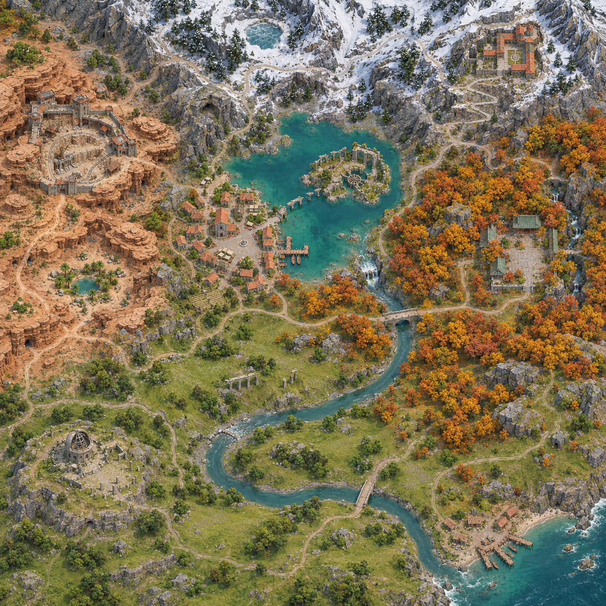

UPlayground · 설계 v1.4 · 2026-11-09 · 지역 상세 7장·건물 확대 7장·경로도 4장·경로 배치 보드 4장 포함
독립 정규 월드 제작 설계안
설산에서 시작한 강이 호수 마을과 가을 숲, 넓은 초원을 지나 바다로 흐르는 탐험형 TPS 월드를 새로 제작한다. 마지막 게임 월드 시안의 지역 관계를 기반으로 실제 이동·전투·발견·귀환이 성립하도록 구성한다.
제안 씬은 Assets/01.Scenes/Ingame/Worlds/RiverBasinWorld.unity, 내부 MapID는 RiverBasinWorld다. 기존 시나리오 맵을 복사·확장하거나 최종 통합 대상으로 삼지 않는다. 제작·검증 진행은 작업 상태 문서에 있다. 이 문서의 좌표·치수·예산은 블록아웃에서 조정할 시작값이며 구현 완료 수치가 아니다.
1 제작 범위와 완료 기준
목표는 지도 한 장을 재현하는 것이 아니라, 실제 캐릭터로 돌아다닐 때 다음 장소가 궁금해지는 정규 맵이다. 조감도상의 지역 구분보다 플레이어 눈높이에서 읽히는 지형, 랜드마크 실루엣, 접근 경로와 돌아오는 길을 우선한다.
구분
제작 결정
독립성
새 씬·TerrainData·재질 변형·지도 설정·NavMesh·콘텐츠 ID를 사용한다. 기존 Scenario/, Scenario/OpenWorld/와 ThemeStudies/의 배치를 가져오지 않는다. 원본 프리팹·메시의 읽기 전용 재사용은 허용한다.
핵심 범위
설산·산악 고개·건조 협곡·호수 생활권·가을 숲·강변 초원·해안. 연속된 강, 주요 거점 7곳, 큰 순환 경로 3개, 발견 보상과 저장 복구까지 제작한다.
기존 시스템 활용
KCC 이동, 기존 전투·AI·저장·상호작용·지도·환경 시스템에 연결한다. 수영·활공은 현재 작업 트리에 코드가 있으나 실제 상태는 별도 확인한다. 검증 전에는 필수 통행 수단으로 사용하지 않는다.
초기 제외
새 생존 시스템, 지역별 전투 규칙, 실시간 조수, 계절 전환, 파괴 가능한 댐은 초기 제작에 넣지 않는다. 시각적 눈·건조·가을 구분과 지형 탐험부터 완성한다.
정규 맵 완료
실제 TPS 미술 인수, 지역 왕복·전투·저장/로드, 미니맵 좌표 정합, 관련 성능 측정을 모두 통과한 상태. 예쁜 이미지나 NavMesh 경로 성공만으로 완료 처리하지 않는다.
산출물은 설계안, 전체 참조 이미지, ImageGen 지역 상세 7장과 주요 건물 확대 7장, 좌표 기반 SVG 경로도 4장, ImageGen 경로 배치 보드 4장이다. Unity 씬 생성·모델링·게임용 텍스처 생성·외부 에셋 다운로드·런타임 검증은 아직 수행하지 않았다. 상세 시안은 미술·공간 구성 후보이며 치수가 검증된 평면도나 제작 승인 완료본이 아니다.
2 기준 이미지와 실제 월드 구성

최종 대화 시안 보관본. 시안의 사선 투영·압축된 거리·건축 양식 혼합은 그대로 복제하지 않는다. 배치는 아래 좌표와 플레이 경로를 기준으로 다시 설계한다.
구성 원칙
호수와 물길이 월드의 중심: 설산의 물이 생활권을 만들고, 숲과 초원을 지나 해안으로 이어진다.
산맥은 경계와 선택지: 능선 전체를 막지 않고 고개·낮은 안부·협곡 우회로를 만든다.
지역은 활동 방식으로 구분: 초원은 넓은 시야와 자유 이동, 숲은 가림과 발견, 협곡은 층별 접근, 설산은 좁은 길과 전망이 중심이다.
목적지는 일부만 노출: 처음부터 모든 건물을 보이지 않는다. 봉우리 위 수도원, 수면 너머 섬의 실루엣이 방향을 알려준다.
전투 후에도 공간이 남음: 보상과 함께 귀환 지름길·전망·새 접근로를 얻는다.
절제된 밀도: 장소 사이에 조용한 초원과 물가가 있어야 랜드마크가 강해진다. 바위·나무의 균일 산포를 피한다.
초기 규모와 좌표 계약
외곽 1,536 × 1,536m, 중심 원점, X=동쪽·Z=북쪽, 해수면 Y=0으로 시작한다. 주 탐험 면적은 약 1.3~1.6km²를 목표로 하고 나머지는 원경·수면·비보행 사면으로 쓴다. 주거점 간 보행 거리는 200~450m를 먼저 시험한다. 이동 시간은 실제 캐릭터 속도·스태미나·전투를 포함해 측정하고, 지루하면 랜드마크와 경로를 압축한다.
아래 U,V는 0~1 정규화 좌표이며 V=북쪽이다. 월드 좌표는 X=(U−0.5)×1536, Z=(V−0.5)×1536으로 변환한다. Y는 표의 지형 저작 범위에서 접지 후 확정한다.
지역과 중심 U,V
높이 제안
풍경과 실제 활동
발견과 복귀
북부 설산·수도원 0.73, 0.88
등산로 125~195m 원경 봉우리 220m
눈 덮인 능선·검은 암반·침엽수. 저지대에서는 수도원 상부만 보이고, 고개를 넘으면 빙설 분지가 열린다. 바람막이 안부에 전투 공간을 둔다.
고갯길 정면 접근과 서쪽 계곡 우회. 수도원 뒤편 길이 호수 북안으로 돌아옴.
서부 건조 협곡·채석 요새 0.18, 0.65
협곡 바닥 65~90m 상단 105~135m
비그늘 쪽 침식 사암과 마른 개울. 요새 정문은 보이지만 하단 광산 입구는 절벽을 돌아야 발견된다. 마른 지형과 작은 수원의 대비를 준다.
상단 정면 전투와 하단 침투 경로. 광산은 짧은 별도 메시 공간으로 요새 뒤쪽에 재연결.
중북부 호수·수몰 유적 0.49, 0.66
수면 96m 호안 97~105m
대표 원경. 건물은 호안 한쪽으로 모으고 수면을 넓게 비운다. 얕은 물속 옛길이 섬으로 향하는 단서가 된다.
안전한 해안길과 끊어진 석조길의 두 접근. 수영 없이 섬까지 도달 가능하도록 지지면 설계.
호수 마을·중심 거점 0.37, 0.56
98~108m
12~18개 건물로 시작해 작업장·광장·선착장·밭의 관계를 만든다. 물과 섬 유적이 거리 끝에서 보인다.
초원·협곡·호수·숲으로 분기하는 출발/회복 거점. 문 앞·주동선에 강제 전투를 겹치지 않음.
동부 가을 숲·옛 사당 0.76, 0.48
강변 54~78m 숲 사면 70~115m
황금·갈색 수목을 큰 군락으로 묶고 강 양안에 숲을 둔다. 숲길에서는 지붕 일부를, 강변에서는 사당의 높은 석축을 보인다.
강변길·숲 능선길로 접근. 사당 뒤편 좁은 골짜기가 다리 부근으로 연결.
남서 초원·관측 유적 0.26, 0.25
24~65m
넓은 풀밭, 낮은 능선과 작은 수목 군락. 첫 전망에서 호수 방향·설산·가을 숲의 관계를 읽는다. 강이 초원 내부를 통과.
시작점, 개울·야생동물·작은 발견 공간. 유적 정상에서 강의 우회 경로와 해안이 보임.
남동 해안·어촌 0.81, 0.15
수면 0m 취락 3~12m
강 하구와 작은 잔교, 바위 곶. 대도시보다 작은 어촌으로 종점의 휴식을 만든다.
강변과 해안 상단길로 왕복. 바닷길은 고정 수위로 구성하고 조수 대기는 요구하지 않음.
2.1 지역별 확대 상세와 주요 건물 시안
지역 시안은 확대 배치와 플레이어 진입 시점, 건물 시안은 확대 외관·정면·지붕 제거 공간 구성을 함께 보여준다. 같은 지역 이미지를 건물 생성의 참조로 사용해 재료와 형태를 연결했다. 모든 이미지는 클릭하면 원본 크기로 열린다.
이미지에서 보이는 계단 수·문 위치·내부 구획·교량 접합은 모델링 근거를 보완하는 시각 참고다. 지역 단위 시안과 건물 단위 시안 사이의 세부 차이는 아래 제작 조건을 우선해 통일한다. 특히 높은 수도원과 가을 사당의 유사한 실루엣, 물 위 접근로의 단절, 여관의 층별 동선은 블록아웃에서 확인한다. 그림 속 인물은 크기 참고용이며 캐릭터 디자인 제안이 아니다.
북부 설산과 수도원
경험: 드러난 능선과 바람을 피하는 계곡을 번갈아 지나 높은 수도원에 도달한다. 아래에서 보이던 호수와 탐험한 길이 정상에서 하나의 풍경으로 이어진다.
건물 시안의 배 경사면은 수면까지 연속되는지 검증해야 한다. 뜬 기초·침수된 작업장·잔교 아래 카메라 진입을 확인한다. 주민 활동 마당과 선택 전투 공간은 분리한다.
생성 원본과 제작 적용 범위
총 14장은 내장 ImageGen으로 제작했다. 전체 월드 참조 → 지역 상세 → 해당 지역의 건물 확대 순으로 참조를 연결했다. 생성 프롬프트와 파일 대장에 각 이미지의 전체 프롬프트, 입력 참조, 저장 파일과 원본 경로를 보관한다. 이미지 PNG는 모델·텍스처 atlas·치수 도면을 대체하지 않는다. 건물 확대 시안에서 필요해진 새 모델은 기존 에셋 비교 후 결손에 한해 제작한다.
2.2 맵 제작 지침 적용과 지역 경험 정의
2026-11-09 오픈월드 맵 제작 가이드의 P01~P08을 제작·인수 기준으로 적용한다. 기존 설계의 순환·차폐·역방향 접근·전투 여유는 유지하고, 부족했던 경험 정의·목표 위계·실제 조망·초견 계측을 아래와 같이 보완한다. 다음 표는 제작 가설이며 플레이 검증 결과가 아니다.
원칙
이 월드의 적용과 확인 근거
P01 경험 우선
아래 지역 경험 정의와 P0 이동·카메라 규격을 먼저 확정한다. 면적·좌표는 경험을 만족시키도록 조정한다.
P02 출발·전환·도착 구도
VP 조망 카드로 진입·분기·도착·재정향을 기록한다. ImageGen 보드는 실제 카메라 캡처를 대체하지 않는다.
P03 대·중·소 목표
아래 POI 연결을 기준으로 먼 방향 → 다음 선택 → 가까운 행동을 구분한다. 같은 장소도 관측 구간에 따라 역할이 바뀔 수 있다.
P04 공개·차폐·방향 복구
VP별 첫 노출·차폐체·대체 단서·재노출을 기록한다. 모든 구간에 같은 공개 순서를 강제하지 않는다.
P05 의미 있는 선택
각 분기에 예상 위험·발견·귀환의 차이를 둔다. 자유 등반 대신 고개/계곡, 상단/광산의 차폐·분기·재공개 기능을 사용한다.
P06 시간·행동 리듬
첫 단서·첫 선택·실제 상호작용 시간을 따로 잰다. 기존 거리·시간 시작값과 강연의 40초 사례를 합격 규격으로 쓰지 않는다.
P07 세계 안의 안내
물길·작업 흔적·건물 틈·소리를 단서로 사용한다. HUD 목적지/POI 마커를 가린 초견 관찰로 다음 행동이 읽히는지 확인한다.
P08 블록아웃 선검증
P1 안에서 G2 블록아웃과 G3 초견 테스트를 완료한 뒤 P2 아트에 착수한다. 구도 실패를 식생·조명·표지판 추가로 덮지 않는다.
지역 경험 정의서의 시작안
주 감정 하나, 스스로 발견할 대상 2~3개, 핵심 행동 1~2개를 지역마다 정한다. 정면·역방향·고지대·저장 복귀의 진입을 기록하고, 빠른 이동은 실제 지원이 확인된 도착점만 추가한다.
지역 / 주 감정 / 핵심 행동
스스로 발견할 것
진입과 선택의 차이
설산 · 성취감 경로 선택·조망
서쪽 계곡의 우회 진입, 고개 뒤 빙설 분지, 정상에서 호수와 하산길.
북안 계류교 진입과 가을 능선 역진입. 노출된 주등산로의 빠른 방향 파악과 계곡의 차폐·새 시야를 비교한다.
협곡 · 긴장 관찰·전투
하단 광산 입구, 작은 수원, 고개 너머 호수.
마을 쪽 상하 분기와 호수 북안 역진입. 읽히는 정문 전투와 입구를 찾아 후방에 도달하는 광산 접근을 구분한다.
호수 · 호기심 탐사·경로 선택
수중 옛길의 흔적, 연속된 보수 발판, 섬에서 보는 출수구.
마을 호안과 북안 접근. 안전한 다리와 낮은 측면 보수길은 다른 높이의 발견을 제공하며 양쪽 모두 육상 복귀를 보장한다.
마을 · 안도감 준비·목적지 선택
밭과 하역장의 관계, 거리 끝의 섬 유적, 서쪽 절벽으로 이어지는 작업길.
초원 첫 진입과 숲·협곡·북안 귀환. 생활 주동선에서 휴식과 다음 탐험 선택을 제공하고 강제 조우를 피한다.
가을 숲 · 기대감 탐색·전투
지붕 일부로 보이는 사당, 수로 흔적과 강변길, 사당 뒤 재연결 골짜기.
B1 교량과 북동 능선 역진입. 조우가 읽히는 강변 본선과 새 시야를 주는 능선 선택길의 결과를 구분한다.
초원 · 해방감 자유 이동·조망
관측 유적, 강 굽이의 복귀길, 유적 정상에서 보는 해안.
남서 시작점과 B2/마을 귀환. 마을 직행과 유적 우회 모두 다음 방향이나 관측 보상을 제공한다.
해안 · 평온함 관찰·귀환
하구와 생활 시설의 관계, 바위 곶 전망, 해안 상단 복귀길.
B2 하류 분기와 상단길 역진입. 물가와 상단길의 풍경·전망 차이를 주고 끝점에 빈 막다른 길만 남기지 않는다.
P0 공통 규격: 실제 고정 플레이어 Bokusei의 걷기·달리기·대시 속도와 지속/회복 조건, KCC 캡슐·경사·단차·회피 이동량을 기록한다. 탐험·달리기·락온·전투 복귀·벽 충돌 시 FOV/카메라 높이/거리를 기록하고, 낮·밤·역광 및 지원되는 비/안개 상태를 시험 조건으로 고정한다. 미지원 이동·날씨·스트리밍을 전제로 설계하지 않는다. 보이는 원경은 도달 가능 여부와 경계를 구분하며 배경 산봉우리가 통행 약속으로 오인되면 지형 신호를 수정한다.
대·중·소 POI 연결의 시작안
관측 구간
L 먼 방향 / M 다음 선택 / S 가까운 행동
단서와 도착 결과
초원 → 마을
L 설산 수도원 / M 호수 마을·관측 유적 / S 유적으로 오르는 샛길의 흔적.
산과 생활권을 실루엣으로 구분. 샛길은 실제 전망으로 이어지고 마을 직행을 막지 않는다.
A 생활권
L 높은 사당 / M B1 다리·사당 능선 분기 / S 옛 수로 흔적·선택 자원.
지붕과 강 소리 → 갈림길 → 관찰/접근. 선택 자원은 유효한 소비처 확인 후 연결하며 미확정 보상에 진행을 의존하지 않는다.
B 협곡
L 상단 요새 / M 정문·하단 광산 / S 바퀴 자국·입구 옆 작은 수원.
작업 흔적 → 상하 선택 → 후방 접근 또는 정면 전투. 수원 기능 미확정 시 자원 보상을 약속하는 시각 신호를 쓰지 않는다.
C 고지대
L 수도원 / M 계류교·고개 / S 고개 완충 공간·정상 전망.
계류와 산문 일부 → 고개 선택 → 분지/호수 재발견. 쉼터나 상자를 일정 간격으로 복제하지 않는다.
B2 → 해안
L 하구와 바다 / M 어촌·상단길 / S 바위 곶 전망.
물길과 생활 시설 → 수변/상단 선택 → 전망과 순환 복귀. 막다른 샛길에는 풍경·정보·자원·연결 중 의도한 결과를 남긴다.
POI 카드: 기존 M/K/D/S 등 경로 기호는 보존하고, 추가 관심 장소만 고유 카드 ID를 부여한다. 카드에는 관측 구간의 L/M/S 역할, 존재 이유, 최초 단서·관측 위치, 도착 행동, 위험·보상·우회, 정면/측면/역방향 접근, 다음 POI 단서, 발견·접근·완료 결과를 기록한다. 숨은 광산·샛길은 낮은 발견률 자체를 실패로 보지 않으며 주변 흔적과 실제 결과가 연결되는지 판단한다.
3 경로 시안과 탐험 동선
한 개의 긴 일방향 관광로 대신 마을로 돌아오는 세 순환을 만든다. 아래 도면은 문서의 U,V 좌표와 1,536m 크기를 사용하는 제작 제안 경로다. 지형 채색은 개략도이며 실제 Terrain이나 ImageGen 그림을 측량한 결과가 아니다. 고도·경사·교량 폭·동굴 내부와 실제 양방향 보행은 블록아웃에서 확인한다.
전체 이동망 · 실선은 주요 연결, 점선은 선택길·광산 내부·구조물 접근 후보. M은 중심 마을, B1/B2/B3는 교량, F는 선택 여울이다. 클릭하면 확대 가능.
순환
기본 경로
평면 제안 길이
경험과 연결 조건
A 생활권
M 마을 → B1 숲 다리 → 가을 강변 → B2 초원 다리 → O 관측 유적 → M 마을
약 2.30km
숲에서 초원으로 시야가 열리는 첫 순환. 기본 도하는 다리만 사용하며 F 여울은 선택 지름길이다. 해안 H는 B2에서 분기한다.
B 협곡
M 마을 → Q 하단 광산 → K 채석 요새 → P 서쪽 고개 → N 호수 북안 → M 마을
약 1.63km
아래에서 요새로 침투하고 위쪽 고개로 귀환. 광산 내부 Q↔K를 별도로 제작하며 정문 지상 우회로도 확보한다.
C 고지대
M 마을 → N 호수 북안 → B3 계류교 → D 수도원 → R 숲 능선 → S 사당 → B1 숲 다리 → M 마을
약 2.49km
등산과 하산을 다른 길로 구성. 호수 유입 계류를 건너는 작은 교량 B3를 명시하고 활공 없이 연결한다.
길이는 제안 좌표의 XZ 평면 꺾은선 합계다. 경사·계단·동굴 굴곡·전투·정지는 포함하지 않으며 현재 이동 시간으로 환산하지 않는다. 초기 주거점 간 200~450m 기준과 비교해 긴 구간은 중간 발견 지점을 두거나 경로를 압축한다. P2 첫 완성 구간 약 300~400m는 전체 A 순환의 일부이며 A 전체를 그 길이로 제작한다는 의미가 아니다.
C 고지대 · 북안 계류교 B3를 통해 호수 유입수 위를 횡단한다. 수도원→능선→사당의 하산로는 별도 보행 사면으로 만들고 지형 절벽을 선으로 관통하지 않게 한다.
교량과 선택 횡단 좌표
기호
U,V
역할
제작 조건
B1 숲 다리
0.7000, 0.4900
마을에서 숲 내부로 진입하는 주요 횡단
도면의 강 중심선과 도로가 같은 좌표에서 만난다. 수면보다 높은 상판·접근 경사·양안 지지면 확보.
B2 초원 다리
0.5800, 0.1900
A 기본 순환 복귀와 해안 분기
물가로 떨어지지 않는 접근로와 교량 상판, 인접 주민/전투 구역 분리.
B3 북안 계류교
0.4872, 0.8136
C 순환의 설산 유입 계류 횡단
기존 설계의 북안→수도원 연결에 필요한 작은 교량. 계류 폭·고도는 Terrain 제작 때 확정.
F 선택 여울
0.5100, 0.2650
가을 숲 하류와 초원의 선택 지름길
검증된 얕은 수심·실제 바닥·양안 탈출 경사를 모두 만족할 때만 개방. 미완성이어도 B2 기본 경로로 복귀 가능.
거점·경로 좌표와 길이 데이터에 각 점의 U,V 및 월드 X,Z를 저장했다. 경로도 생성 스크립트가 같은 입력으로 네 도면과 데이터를 만든다. 순환 폐합·거점 존재·좌표 범위·교량/여울 좌표·계획되지 않은 하천 교차를 검사했다. 실제 지형·콜라이더·NavMesh 검증을 대신하지 않는다.
경로 위에 배치할 지형과 오브젝트
경로의 선을 따라 오브젝트를 균일하게 채우지 않는다. 생활 흔적 → 분기와 시선 가림 → 조우 → 발견과 전망 → 조용한 복귀의 역할을 구분하고 각 역할에 필요한 소수의 지형·수목·소품 군을 배치한다. 아래 ImageGen 보드는 실제 TPS 높이에서의 배치 예시이며, 전체 위치와 연결은 앞의 SVG 경로도와 좌표 데이터를 따른다.
그림의 A1~C4는 장면 번호다. 경로도의 B1/B2/B3 교량과 혼동하지 않도록 제작 카드 ID는 PD-A01~PD-C04로 구분한다. U,V는 배치 군락 중심의 제안값이며 실제 오브젝트의 접지 좌표·수량·충돌을 확정한 값은 아니다. 반복되는 쉼터·석등·난간을 모든 장면에 복제하지 않는다.
ImageGen D 보드 · B1 숲 다리 주변 약 90×80m를 검토하는 국소 배치 후보. 왼쪽은 배치 관계, 오른쪽은 분기와 조우 마당의 TPS 구도. 실제 치수는 이미지에서 측량하지 않는다.
구역
배치할 것
비워 둘 것과 검수
D1 분기
본선 바깥쪽의 큰 바위 1개·표석 1개·편측 수목 군. 본선은 다리로, 선택길은 높은 사당 실루엣으로 유도.
두 길 입구와 카메라 회전 공간. 생성 이미지에서 선택길이 불분명하면 표지판을 늘리기 전에 바위와 지형으로 실루엣을 분리.
D2 조우 마당
흙·자갈 전투 바닥, 바깥 암반 3군과 쓰러진 나무 1개를 시작값으로 검토. 강 쪽 퇴로와 안전 경사.
28×32m 목표 중앙, 교량 입구, 적의 공격 예고. 모든 회피 방향이 물로 몰리지 않도록 강과의 간격을 실제 테스트.
D3 교량
약 5m 폭의 지지되는 석교, 낮은 난간과 평탄한 양끝 착지. 상판과 접속 지형을 연속시킴.
통행 중앙과 입구에는 적·상자·등주를 두지 않음. 충돌 단차·넉백·카메라 Solid 규칙 확인.
D4 건넌 뒤
조용한 짧은 착지 공간, 물가 갈대와 작은 옛 수로 흔적, 사당 오르막과 초원 하류길의 분기.
전투 직후 연속 강제 조우를 피함. 생성 이미지의 추가 사당은 채택하지 않고 지역의 대표 사당 한 곳만 유지. 물가 내려감·탈출 경사 확인.
공통 저작 규칙과 실행 순서
먼저 지지면·도로 폭·전투 마당·가시선을 만든다. 그다음 큰 바위와 나무 군락으로 공간을 구분하고 마지막에 작은 소품을 놓는다.
한 구간의 대표 군은 1~2개부터 시작한다. 같은 수레·석등·쉼터·표석을 일정 간격으로 반복하지 않는다. 비워 둔 길과 조용한 구간도 완성된 배치다.
생활 소품은 실제 작업장에, 위험 신호는 실제 위험한 면에 둔다. 길을 장식하려고 울타리·난간·상자를 연속 설치하지 않는다.
뒤에서 걸어올 때도 두 길이 읽히는지 확인한다. 모든 안내를 단방향 카메라와 표식에 의존하지 않는다.
충돌·그림자·LOD·투명 식생 비용을 개별 군 단위로 확인한다. 전투 중심을 풀이나 낙엽 효과로 덮지 않는다.
대표 구도는 진입·분기·조우·귀환으로 저장하고 같은 위치에서 전후 비교한다. 자동 배치가 수동 군·통로 보호 마스크를 덮지 않게 한다.
경로 배치 카드·입력 참조·전체 생성 프롬프트에 12장면의 제안 중심 좌표와 목적·배치 군·통행 조건을 기록했다. 네 보드는 내장 ImageGen으로 제작했다. 아직 씬에 배치하거나 관련 콜라이더·NavMesh·카메라·전투를 검증한 결과는 아니다.
실제 조망 카드와 지역 가시성 지도
다음은 블록아웃에서 확보할 대표 관측점이다. PD 카드·기존 경로 좌표를 출발 후보로 사용하되 실제 서 있는 위치와 일반 조작의 카메라로 확정한다. 원경이 보인다는 사실과 첫 시선의 주 대상은 구분한다. 모든 랜드마크가 모든 관측점에서 보일 필요는 없다.
카드 / 관측 위치
주 대상과 기대 선택
차폐 중 단서 → 재노출·방향 복구
VP01 초원 첫 능선
마을을 주 대상, 설산을 보조 기준으로 둔다. 마을 직행/관측 유적 우회를 읽힌다.
낮은 능선으로 마을 일부 차폐 → 생활권으로 이어지는 길 → 마을 진입에서 호수와 섬 공개.
VP02 마을 광장·호안 출구
호수 섬 유적을 주 대상으로 잡는 구도와 숲으로 떠나는 구도를 별도 캡처한다.
건물 틈으로 섬 첫 노출 → 호안 물길 → 열린 물가에서 섬과 접근로 재확인.
VP03 PD-A02 / B1 전후
정면 교량과 사당 선택길을 구별한다. 교량 진입 구도와 전투 뒤 구도를 나눠 기록한다.
바위·단풍에 사당 일부 차폐 → 강 소리·선택길 → D4와 사당 접근에서 재노출. 전투 복귀 시 퇴로 확인.
VP04 PD-B01 → PD-B02 → PD-B04
문루 주 대상과 하단 입구 단서를 구별한다. 상하 선택 뒤 고개에서 귀환 방향을 회복한다.
절벽에 광산 입구 차폐 → 바퀴 자국·지지목 → 굽이 뒤 입구. 광산 뒤에는 출구 단서, 고개에는 호수 재노출.
VP05 PD-C01~PD-C03
고개에서 산문, 정상에서 호수와 하산길을 주 대상으로 전환한다.
능선에 수도원 차폐 → 계류·고갯길 → 산문 재노출. 정상에서 이전에 안 보이던 분지·귀환 지형 공개.
VP06 PD-C04 / 사당 역진입
하산 중 사당 접근과 B1 복귀 선택. 역방향에는 능선 연결을 다시 읽힌다.
가림 바위와 단풍 → 계단·강변 단서 → 사당 석축과 교량 재확인.
VP07 PD-A04 / 관측 유적·B2
교량 뒤에는 관측 유적, 유적 정상에서는 하구·해안 분기를 주 대상으로 한다.
낮은 능선·수목 군락 → 강 굽이 → 정상과 B2 분기에서 새 목적지 및 복귀 방향 확인.
VP08 해안 진입·바위 곶
하구 생활권 도착 후 해안 상단 귀환길을 읽힌다.
바위 곶이 일부 취락 차폐 → 잔교·물길 → 전망점에서 취락과 상단길 재연결 확인.
카드 ID / 지역 / 참조 PD·경로 기호 / 실제 월드 XYZ / 접근 방향:
카메라 상태 / FOV / 거리 / 높이 / 락온 대상:
주 POI 1개 / 보조 POI / 전경·중경·원경:
첫 노출 / 차폐체 / 차폐 중 대체 단서 / 재노출 위치:
기대 선택 / 역방향·고지대·저장 복귀 시 차이:
낮·밤·역광·지원 날씨 / 보행·대시·전투 복귀·충돌 시 결과:
블록아웃 캡처 / 아트 후 동일 구도 / 초견 영상·관찰 기록:
통과·실패·미수행 / 원인 / 수정 / 재검증:
실제 조건값과 근거 파일을 카드에 함께 보관한다. 캡처는 멈춰 선 대표 구도와 달리며 지나가는 구도를 모두 포함하며 카메라를 강제로 돌려 성공시키지 않는다. 가시성 지도에는 관측점 → 보이는 POI → 차폐체 → 재노출 지점과 시간대·날씨·카메라 상태를 연결한다. 결과는 output/RiverBasinWorld/에 카드·동선·비교 캡처로 보관하고 이미지 시안은 별도로 둔다. 지형·동선 변경 시 바꾸려는 경험과 영향을 받는 POI/VP를 먼저 기록한다.
초견 탐험 관찰과 시간 계측
처음 보는 테스터에게 목적지를 미리 알려주지 않고 A 대표 구간부터 관찰한다. 전투·생존 HUD는 유지하고 목적지/POI 마커와 지도 안내를 가린 조건에서 시작한다. 기존 설정으로 분리할 수 없으면 그 한계를 기록하고 마커 없는 검증을 통과로 표시하지 않는다.
시작 화면·첫 관심 대상·실제 경로·선택 이유를 기록한다. 플레이 중 방향을 유도하지 않고 선택 이유는 행동 후 묻는다. 마커를 켠 접근성/편의 검증은 별도로 실시한다.
구간 진입부터 첫 단서 인지, 첫 선택, 실제 상호작용까지의 시간을 따로 기록한다. 이동 시간과 전투·수집·감상·준비 시간을 구분하고 POI별 인지/접근/완료도 따로 기록한다.
비의도적 정체·불필요한 지도 열람·되돌아감·카메라 탐색을 기록한다. 정보 부족, 동기 부족, 지형 막힘, 카메라 문제, LOD/안개 등 기술 시인성으로 원인을 분류한다. 감상과 준비를 정체 실패로 세지 않는다.
첫 회 관찰 후 지역별 목표와 허용 범위를 정하고 인원·조건·실측값을 남긴다. 선택률 균등이나 발견률 100%를 요구하지 않는다. 필수 연결의 오인·진행 막힘·차폐 뒤 방향 상실이 미해결이면 해당 구간 아트 게이트를 보류한다.
수정 전후 같은 위치·카메라·환경으로 비교하고 역방향과 아트 후에 재검증한다. 사용자에게 설계가 익숙하다면 초견 결과와 구분해 기록하고 초견 검증은 대기로 둔다. 영상·수기 기록으로 시작하며 계측 프레임워크 신설을 선행 조건으로 만들지 않는다.
첫 15분의 플레이 흐름
아래 시간대는 유도 동선이나 필수 완료 시간이 아닌 첫 세션 경험 가설이다. A 전체 약 2.30km와 P2 약 300~400m 구간을 혼동하지 않고, 실제 이동·선택·조우 시간에 따라 구간 길이와 시간대를 함께 수정한다. 다른 길을 먼저 고른 플레이도 유효하다.
구간
플레이어의 선택과 피드백
공간 저작
0~3분 · 초원 진입
능선을 넘으며 호수와 설산을 발견. 마을로 바로 가거나 근처 관측 유적을 둘러봄.
처음부터 모든 지역을 노출하지 않는다. 전방 목적지 1개와 옆길의 작은 호기심 1개를 보인다.
3~7분 · 마을과 호안
생활 공간에서 긴장을 풀고 섬 유적·숲의 높은 사당·서쪽 절벽 중 다음 목적지를 선택.
주동선 4~6m, 핵심 광장 약 24×30m. NPC 작업 공간·상호작용·카메라 회전 공간 분리.
7~12분 · 가을 숲 접근
강변 소리와 다리 실루엣을 따라 이동. 정면 조우 또는 숲 옆길 선택.
폭 5~6m 다리 전후로 28×32m 열린 공간. 강 가장자리에 회피를 강요하는 첫 전투는 피함.
12~15분 · 발견과 귀환
작은 보상·새 전망을 얻고 초원 쪽 길로 돌아옴. 다음 고지대 목적지를 기억.
같은 길 왕복만 요구하지 않도록 강변 지름길을 만든다. 보상은 기존 경제의 유효한 자원 또는 접근로 해금.
탐험 밀도와 난이도 원칙
먼 목적지 하나를 향하는 중, 가까운 발견과 중간 경유지가 이어지도록 구성한다. 저작 시작값은 작은 발견 간 40~90초, 큰 거점 간 3~6분이나 고정 간격·합격 기준은 아니다. 첫 단서/선택/상호작용 시간을 분리 측정하고, 조용한 구간은 의도와 실제 반응을 기록해 유지·압축을 판단한다.
지역 입구마다 전투를 넣지 않는다. 3개 큰 순환마다 대표 조우 1개와 선택 조우 1~2개로 시작하고, 피로도·액터 비용을 본 뒤 밀도를 조정한다.
강한 적이 있는 경로에도 읽을 수 있는 우회로를 둔다. 필수 진입을 지역 보스 처치에 모두 묶지 않는다.
기본 보행로 3~4m, 주도로 4~6m, 좁은 선택길 2.5m 이상으로 시작한다. 실제 KCC 캡슐·회피 이동·카메라 폭을 기준으로 확정한다.
일반 전투 마당은 최소 24×24m, 대표 조우는 32×40m부터 시험한다. 벽·강·나무까지의 여유를 포함하며 적 수를 면적에 맞추지 않는다.
히트 예고·회피·락온을 가리는 허리 높이 풀과 과도한 낙엽 VFX를 전투 중심에 두지 않는다. 낮/밤과 역광에서 적 실루엣을 확인한다.
점프·활공·수영을 하지 않아도 세 주요 순환과 복귀가 가능해야 한다. 추가 이동 능력은 선택 지름길과 발견에 활용한다.
4 지형과 강 제작 명세
Terrain과 메시의 책임
기본은 512×512m Terrain 9장(3×3), 타일별 Heightmap 513×513, 수직 범위 256m로 시작한다. 표본 간격 약 1m이며 도로 세부·석축·동굴·오버행은 메시로 보완한다. 지형 타일은 우선 한 씬에서 관리한다. 타일 수가 곧 스트리밍 도입 근거는 아니다.
같은 경계 표본을 공유해 높이·노멀 이음을 맞추고 인접 Terrain을 연결한다. 표면 레이어 순서와 식생 prototype 매핑도 타일 간 동일한 기준으로 고정한다.
큰 산체 → 보행 고개와 계곡 → 호수·하상 → 도로·전투 평탄면 → 침식·암반 → 표면 → 식생 순서로 제작한다. 침식·노이즈가 통로를 다시 훼손하지 못하게 보호 마스크를 둔다.
동굴은 Terrain 높이맵으로 만들지 않는다. Terrain holes와 기존 던전/Blender 메시를 접합하고 안팎 충돌·NavMesh를 따로 확인한다.
도로 12° 이하, 일반 숲길 20° 이하를 저작 목표로 시작한다. 실제 허용 경사는 KCC 설정과 애니메이션을 측정해 확정한다. 산체를 무조건 등반 가능하게 만들지 않는다.
지역 경계는 60~120m 폭의 전이대로 시험한다. 눈은 고도·사면 방향, 건조 지대는 능선의 비그늘, 가을 숲은 계곡 생활권으로 설명한다. 기후 시뮬레이션 정확성보다 자연스러운 게임적 압축을 택한다.
강의 중심선과 수위
강은 가을 숲과 풀 지역의 경계선에 놓지 않는다. 가을 구간은 강 양쪽이 단풍 숲, 초원 구간은 양쪽이 풀밭으로 보이도록 중심선을 지역 안쪽에 둔다. 폭이 일정한 운하와 연속된 머리핀 굽이를 피하고 큰 굽이 두세 번으로 연결한다.
노드
U,V 제안
수면 Y 제안
저작 조건
W0 설산 계류
0.48, 0.90
160 → 100m
좁은 계류·지류, 눈 녹는 가장자리. 계단 높이는 작은 폭포로 처리.
W1 호수
0.49, 0.66
96m
호수 수면은 수평. 해안 완충대와 얕은 바닥·깊은 바닥을 분리.
W2 출수구
0.60, 0.55
94 → 82m
석조 수문 아래 폭포·낙차. 마을 건물 아래로 물이 관통하지 않음.
W3 가을 숲
0.75, 0.45
70m
폭 10~16m, 양안 숲, 한쪽 자갈톱. 교량 앞뒤 전투 공간 확보.
W4 초원 진입
0.59, 0.31
40m
숲이 뒤로 물러나며 시야가 열림. 강변 산책·관측 유적으로 분기.
W5 초원 굽이
0.43, 0.24
24m
폭 14~22m. 넓은 굽이, 보행 가능한 낮은 호안. 여울은 별도 안전 판정.
W6 하구
0.79, 0.10
0m
폭 25~40m로 확장. 해수와 동일 수면으로 접합, 작은 모래톱만 배치.
각 노드는 수문학 완성 데이터가 아니라 설계 제약이다. 보간한 수면 중심선이 역경사나 지형 관통을 만들면 하상·경로를 함께 수정한다. 한 장의 경사진 물 평면을 쓰지 않고, 평탄 수면 구간과 낙차 구간을 나누어 강 메시를 만든다. 수면 하부 충돌·진입/복귀는 시각 메시와 구분한다.
본류 횡단은 숲 다리 B1·초원 다리 B2·선택 여울 F로 정하고, 설산 유입 계류에는 북안 계류교 B3를 둔다. 80~150m 간격의 물가 탈출 후보를 먼저 두고, 실제 보행 가능한 경사인지 확인한다. 수영 미검증 상태에서는 깊은 물 필수 진입을 차단하거나 육상 대체 경로를 제공한다. 수몰 유적은 초기에는 육상/얕은 길로 탐험하며 수중 던전은 별도 확장이다.
5 기존 에셋 활용과 결손
다음 수량과 경로는 로컬 파일 조사 결과다. 프리팹 존재를 확인했으며 이번 설계 작업에서 실제 렌더링·URP 재질·충돌·LOD를 승인한 것은 아니다. 외부 에셋 원본을 수정하지 않고 전용 Variant와 재질을 만든다. 건축은 시안의 서양 교회·동양 사당 혼합을 그대로 가져오지 않고, 기존 수변 목조·석축을 기준으로 공통 재료와 지붕 언어를 정한다.
요새·광산은 모듈 조합 우선. 긴 수로·섬 유적·관측 장치처럼 실루엣이 부족한 부분만 Blender 제작.
눈·건조 사암
우선 조사 범위에서 전용 완성 키트를 확정하지 못함
기존 암반의 전용 재질 변형 → ImageGen 표면 제작 → 부족한 처마 눈·사암 절개 모듈을 Blender로 제작. 에셋 전체에 없다고 단정하지 않고 결손표에서 재확인.
아트 통일 검사
호수 마을 첫 구간에 플레이어·집·바위·나무·수면·바닥을 함께 놓는다. 같은 태양/하늘/Volume에서 정오·역광·밤을 확인해 스케일, 잎 크기, 텍스처 밀도, 광택과 그림자를 맞춘다. 기본 자연계 한 팩을 택하고 다른 팩은 화면에서 어울림을 확인한 부품만 보충한다. 지역별 색상 보정으로 이질적인 형상을 숨기지 않는다.
6 Blender 모델과 ImageGen 텍스처
Blender 조건부 제작 목록
우선순위와 자산
제작 조건
납품 명세
1 강·호안 메시
기존 물 구성으로 연속 수위와 낙차를 표현하지 못할 때. 중심선과 폭·수위 표를 입력해 재현 가능하게 생성.
분절된 강 수면, 가장자리 거품/자갈 접합 메시. UV 흐름 방향 일관. 보행 지면·물 판정은 별개.
1 부서진 섬 수로·교량
기존 키트에 대표 실루엣·필요 폭이 없을 때. 반복 아치·상판·단부를 모듈화.
4/8m 길이 단위, 상판 5m 목표, 별도 단순 콜라이더. 끊어진 구간에도 실제 접근로 존재.
2 사암 절개·층상 절벽
기존 바위 재질 변형만으로 건조 협곡의 층과 연결이 성립하지 않을 때.
직선·코너·계단식 절개·하단 접합 4~6모듈. 장식 메시와 이동 경계를 분리.
2 설산 적설 모듈
재질만 바꿔서는 눈 처마·두꺼운 눈 경계가 필요한 근경에서 부족할 때.
눈 덩어리·사면 접합·처마 3~4모듈. 동굴 입구나 산길을 장식 충돌로 막지 않음.
3 관측 유적·수몰 랜드마크
블록아웃에서 대표 실루엣이 약하고 기존 유적 부품 조합으로 해결되지 않을 때.
지역당 대표형 1개. 원경에서 읽히는 큰 형태, 근경 반복 부품 재사용, 개별 디테일 과잉 방지.
작업 단위는 m, 정방향·축 변환은 기준 큐브와 플레이어로 Unity 왕복 확인한다. 원본 .blend와 납품 .fbx, 사용 텍스처, prefab, .meta를 함께 보존한다. 적용된 Transform, 피벗·UV·노멀, LOD0/1/2 또는 해당 물체에 맞는 LOD, 별도 저비용 충돌, 재질 슬롯 최소화를 확인한다. 큰 절벽 하나를 세밀한 비볼록 충돌로 덮지 않는다.
ImageGen 텍스처 제작 작업표
ImageGen은 알베도·색과 표면 패턴 제작에 사용한다. 생성 PNG를 높이맵·물리적으로 정확한 PBR 세트로 취급하지 않는다. Normal·AO는 실제 메시/height 근거에서 베이크하고, Roughness는 재질별로 따로 저작·시험한다. 알베도는 sRGB, 데이터 맵은 Linear, Normal은 Unity Normal Map 임포트와 방향 확인을 적용한다.
작업 ID
텍스처
출력과 용도
검수
TX01
바람에 다져진 눈
2K 타일 알베도. 기본 눈과 약한 바람결 2변형. 설산 TerrainLayer.
순백 소실·푸른 그림자 베이크·눈 반복 무늬 제거.
TX02
차가운 회색 암반
2K 타일, 4~8m 기준으로 시험. 설산 암반·고개.
눈/암반 경계와 먼 거리 반복, 급경사 늘어짐.
TX03
황토 사암과 마른 자갈
사암·지면 별도 2K. 같은 색 계열과 입자 스케일.
큰 균열을 충돌로 오해하지 않는지, 채도·수직 UV.
TX04
가을 낙엽 지면
2K 타일, 낙엽 드문 형태/밀집 형태. 흙길 가장자리.
반복되는 큰 잎 무늬, 적 실루엣·아이템 판독.
TX05
풀밭 아래 토양
2K 타일, 풀색/노출 흙의 두 표면.
풀 모델과 명도 연결. 지면 위에 긴 풀을 그림으로 베이크하지 않음.
TX06
젖은 강자갈·모래
각 2K 타일. 하상·물가·하구.
물결/하이라이트를 알베도에 넣지 않음. 건조→젖음은 재질로 처리.
TX07
유적 석재 trim sheet
2K 아틀라스. 섬 수로·부서진 아치 공통.
UV 배치·해상도·모듈 접합 확인. 문양은 충돌 디테일 대체 금지.
공통 프롬프트는 game environment material albedo, seamless tile, orthographic flat surface, uniform diffuse illumination, no cast shadow, no specular highlight, no perspective, no objects, no text, restrained natural color, consistent physical scale를 사용하고 각 표면을 추가한다. 한 장의 콜라주에서 여러 재질을 잘라 쓰지 않고 표면별로 생성한다. 정확한 타일 경계는 보장되지 않으므로 3×3 반복 검수 → 경계 보정/재생성 → 구·평면·실제 지형 검수 순서로 통과시킨다.
프롬프트·입력 참조·원본 출력·수정 내역·타일 크기·파일 hash·사용 재질을 기록한다. 승인된 제작본은 전용 폴더에 복사하며 기존 공유 텍스처를 덮어쓰지 않는다. 2K는 시작값이며 작은 소품은 축소하고 대표 근경만 해상도 증가를 검토한다.
생성 월드의 splat·collider 내보내기를 지원하며, 고품질 textured mesh와 상업 권한은 별도 유료 플랜 조건으로 안내한다.
기본 경로에서 제외: 현재 프로젝트의 URP·KCC·NavMesh·편집 가능한 모듈 자산으로 납품되는지 입증되지 않았다. 비용이나 새 런타임을 정규 맵 선행 조건으로 만들지 않는다.
ImageGen
지역 시안·재질의 시각적 후보 제작.
직접 사용: 표면 알베도와 신규 랜드마크 방향 비교. 그림의 명암을 실제 고도로 자동 변환하지 않으며 지도 이미지를 최종 씬의 근거로 고정하지 않는다.
제작 중 적용할 반복 절차
배치 계약 작성: 지역 폴리곤, 주요 지점, 강 중심선·수위, 도로, 전투 마당, 랜드마크 가시선, 보호 마스크, 사용 prefab GUID, seed를 전용 저작 데이터에 저장한다. 기존 모듈이 담을 수 있는 필드를 먼저 재사용한다.
큰 지형 생성: 경로 그래프에 맞춰 산체·고개·하상을 만든다. 높이맵과 식생 마스크를 별도 저장하고, AI의 좌표 제안을 경사·간섭 검사 없이 실행하지 않는다.
블록아웃 플레이: 실제 캐릭터의 걷기·달리기·회피·카메라로 주요 순환을 확인한다. 실패한 길은 장식을 추가하기 전에 수정한다.
대표 구간 아트: 호안 → 숲 다리 → 초원 구간을 기존 에셋으로 구성. 결손에 한해 Blender/ImageGen/무료 모델을 적용한다.
제약 기반 산포: 고도·경사·습도 역할·거리 마스크로 군락을 배치한다. 도로·전투 마당·교량·스폰·대표 가시선·수면을 제외하고 군락의 중심/가장자리 밀도를 다르게 한다.
검사와 시각 수정: 접지·충돌·NavMesh·참조 검사는 자동 보조, 재미와 미술은 실제 TPS 사용자 검수. 같은 구도의 전후 캡처를 보고 큰 형태부터 수정한다.
안전한 증분 저장: 새 버전 staging 결과를 검사 후 지정 루트에 반영한다. 수동 저작 영역은 재생성 대상에서 제외하고, 실패하면 생성 루트와 전용 데이터만 복구한다.
설계 단계에서 위 흐름을 채택했다. AI 생성 파이프라인을 이미 구현·설치·성능 검증했다는 의미는 아니다. 새로운 거대 프레임워크보다 기존 배치/캡처/검사 도구에 작은 전용 저작 입력을 연결하는 방식을 우선한다.
8 씬과 데이터 소유권
Assets/01.Scenes/Ingame/Worlds/RiverBasinWorld.unity
Assets/10.Datas/World/RiverBasinWorld/
Terrain/ 9개 TerrainData와 표면 레이어
Navigation/ 이 월드 전용 NavMeshData
Materials/ 기존 재질의 전용 변형
Maps/ 실제 씬 캡처와 MinimapConfig
Environment/ 하늘·조명·물 설정의 전용 에셋
Assets/03.Prefabs/Environment/RiverBasinWorld/
Assets/08.Models/World/RiverBasinWorld/ 신규 모델 납품본
Assets/04.Images/World/RiverBasinWorld/ 신규 텍스처 납품본
Tools/RiverBasinWorld/ 저작 입력·Blender 원본·자산 대장
output/RiverBasinWorld/ 검사 보고·고정 구도·사용자 테스트 명세
RiverBasinWorld
SceneContext
WorldEnvironment
TerrainRoot
WaterRoot
GeneratedEnvironment
AuthoredLandmarks
GameplayRoot
NavigationRoot
EntryAndRecovery
기존 생성기 재실행 금지:OpenWorldSliceAuthoring는 기존 시나리오 복사·특정 경로 교체를 수행한다. 새 월드를 만들기 위해 그대로 실행하거나 상수만 바꾸지 않는다. 공용 순수 기능만 검토해 재사용한다.
새 맵 식별:SceneContext.MapID=RiverBasinWorld, 실제 기존 Ingame 씬의 SceneType·플레이어 스폰·HUD 준비 계약을 확인해 연결한다. 빈 FlowGraph 목록을 갖는 전용 MapRegionInfoSO부터 준비해 기존 시나리오 사건이 섞이지 않도록 한다.
정규 등록: 구현 단계에서 MapConfigDatabaseSO에 새 Entry와 전용 MinimapIconConfigSO를 추가한다. 기존 DefaultStartMapId나 기존 시나리오 Entry를 교체하지 않는다. 정규 씬 전환/Addressables 연결은 현재 등록 도구를 확인해 새 항목으로 추가한다.
단일 씬 우선: 초기에는 큰 런타임 스트리밍을 새로 만들지 않는다. 측정상 필요할 때만 현재 ContinuousWorldController/ContinuousWorldRegion의 수명·진입·저장 경계를 검토해 분할한다. 기존 시나리오 MapID나 SceneKey를 재사용하지 않는다.
콘텐츠 독립: 신규 SceneEntityId를 부여하고 기존 저장 ID를 복제하지 않는다. 기존 Quest·Flow·트리거가 포함된 조립 프리팹을 쓰면 환경 외 컴포넌트를 조사한다. 새 진행은 RiverBasinWorld 범위에서만 발화한다.
회차 경계: 적·채집·반복 보상은 기존 리스폰/회차 정책에 따른다. 획득 장비·성장과 발견 지식·지름길은 프로젝트 회차 경계 명세와 대조해 별도 지정한다. 영속 여부가 확정되지 않은 항목은 진행 필수 조건으로 쓰지 않는다.
수동과 자동 분리: 생성기는 GeneratedEnvironment와 manifest에 지정한 전용 데이터만 수정한다. 수동 랜드마크와 진행 오브젝트는 별도 루트 및 보호 마스크로 보존한다. 전용 경로 밖 쓰기는 검사에서 실패시킨다.
공유 자산: 원본 모델·프리팹은 참조하되 재질·Terrain·NavMesh를 공유 편집하지 않는다. 공용 코드가 필요하면 asmdef/서비스 계약 규칙을 따르고 Editor 코드는 Editor 범위에 둔다.
실제 씬 기반 지도
최종 배경은 ImageGen 시안이 아니라 MinimapCaptureUtility를 사용한 새 씬의 수직 정사영 캡처로 만든다. 제안 캡처는 중심 (0,0), 크기 (1536,1536), 4096×4096이다. 실제 산체 최고점 위 카메라와 far clip을 설정하고 UI·액터·임시 gizmo를 제외한다.
전용 MinimapIconConfigSO의 backgroundSprite, captureCenter, captureWorldSizeXY를 맞춘다. 실제 북쪽·네 모서리·마을·두 다리에서 위치 오차를 확인해 필요할 때만 flip/rotation을 보정한다. 경사 투영으로 예쁜 배경을 만들고 좌표를 억지로 맞추지 않는다. 아이콘과 프레임은 기존 UI 리소스를 쓰고 월드 재질용 ImageGen과 분리한다.
9 제작 순서와 단계별 산출물
단계
산출물
다음 단계 조건
P0 기준선·자산 비교
새 월드 경로와 ID 예약, 기존 씬/공유 데이터 hash, 사용 자산 대장, 대표 구도와 미술 비교 구역, 지역 경험 정의, 이동·카메라·지원 날씨 규격, POI 카드와 VP 후보, 캐릭터 이동·수영·활공 상태 확인(G0~G1).
독립 데이터 경로·기본 아트 키트·플레이 준비 계약 확정. 기존 사용자 변경 보존.
P1 전체 블록아웃
새 씬, 9 Terrain의 큰 산체, 강과 호수, 회색 거점 7개, 세 순환, 전투 마당, 기본 NavMesh. 세부 식생·생활 소품 생략.
G2: 수위 연속·양방향 길·귀환과 회색 지형의 목표/분기 판독 확인. G3: 마커 없는 초견 동선·인지/접근/완료·세 시간 지표·혼란 원인 기록. VP01~08 중 제작 범위의 실제 캡처 확보. 강이 숲/초원 내부를 통과. 미해결 필수 동선·방향 복구 문제는 P2 착수 전 수정.
P2 첫 구간 완성
호수 마을 입구 → 호안 → 숲 다리 → 초원 복귀의 약 300~400m 구간. 근경 바닥·수면·바위·나무·조명·조우·발견 보상을 함께 제작.
G4 대표 아트: 실제 TPS 3구도(진입/강 횡단/귀환 전망), 낮·밤·역광·지원 날씨, 회피·락온·카메라 사용자 인수. P1 블록아웃 대비 시야·동선·발견 단서 회귀 비교. 불만족이면 다른 지역을 늘리지 않고 이 구간 수정.
P3 특수 지형 제작
설산·건조 협곡의 고개와 요새, 수도원. TX01~03 및 필요한 Blender 모듈. 각 지역 대표 장면과 우회 경로.
바닥 늘어짐·반복 바위·눈 경계·단차·카메라·전투 공간 확인. 결손 자산만 신규 제작.
P4 월드 확장
가을 사당·초원 관측 유적·해안과 나머지 순환. 군락 산포와 장소별 생활 흔적. 조우와 보상 데이터 연결.
지역별 G2~G4를 반복해 경로 순서와 무관한 발견·획득·재진입·복구 확인. 숨은 POI·막다른 길의 결과와 분기별 위험/보상 차이 확인. 의미 없는 빈 터나 동일 보상 반복 수정.
P5 정규 등록·최적화
MapID·씬 등록, 지도 캡처, 이름 규칙, LOD·거리·NavMesh 정리, 고정 경로 측정, 사용자 테스트 명세.
G5 회귀: 다중 진입·역방향·환경·카메라 상태, LOD/컬링 경계 가시성 및 블록아웃/아트 비교 근거와 항목별 인수 결과 확인. 관련 검증은 Unity 컴파일·EditMode·Editor Play Mode로 수행. 별도 지시 전 Player/Addressables 빌드는 실행하지 않음.
일정은 P2 실측 제작량과 수정 횟수 후 산정한다. 생성 이미지 수·오브젝트 수·에셋 파일 수를 완료 지표로 삼지 않는다. 제작 전 요청서에는 대상 단계, 쓰기 허용 경로, 완료 조건, 미검증 항목만 명시하고 기존 13역할/시나리오 통합 계획을 재실행하지 않는다.
첫 제작 요청서
대상: RiverBasinWorld P0~P2
목표: 새 독립 게임 씬에 전체 블록아웃을 만들고,
호수 마을 → 가을 숲 다리 → 강변 초원 복귀 구간을 실제 TPS 품질로 완성한다.
필수: P0 지역 경험·이동/카메라 규격·POI/VP 카드를 작성한다.
P1 회색 맵의 무마커 초견 관찰과 방향 복구 문제 수정 후 P2 아트에 착수한다.
강 양안이 가을 숲인 구간과 초원인 구간을 모두 만든다.
설산·건조 협곡·호수·가을 숲·초원의 큰 지형은 처음부터 확보한다.
자원: 기존 환경 프리팹 우선. 결손 모듈은 Blender, 표면 알베도는 ImageGen.
웹 무료 모델은 로컬 결손 확인 후 출처/라이선스를 기록해 보완한다.
경계: Scenario 씬·기존 월드 Terrain·공유 재질·기존 콘텐츠 ID를 수정하지 않는다.
기존 생성기/일회성 저작 스크립트를 재실행하지 않는다.
완료: 새 씬/전용 데이터/자산 대장/고정 TPS 캡처/관련 자동 검사/사용자 테스트 명세.
실제 플레이 미검증은 사용자 테스트 대기로 남긴다.
10 성능과 사용자 인수
성능 목표의 시작값은 기준 PC·1080p·기존 목표 품질에서 60fps(16.7ms)다. 기준 하드웨어는 P0에서 기록하고 CPU/GPU 시간을 따로 측정한다. 프레임 평균만으로 판정하지 않고 숲 진입·마을 조우·수면 근접의 프레임 튐과 메모리를 함께 기록한다. 현재 성능을 측정한 결과가 아니다.
풀·낙엽·물의 투명 오버드로, 수목 그림자, 원경 건물과 강 수면을 첫 비용 후보로 본다. 기존 환경 렌더·LOD·거리 제어를 우선 적용한다.
전 지역의 적을 동시에 활성화하지 않는다. 기존 액터 tick·가시거리 정책을 사용하며 환경 오브젝트마다 Update를 새로 만들지 않는다.
검사에서 Missing Script/분홍 재질/직렬화 누락/서비스 예외는 0을 요구한다. NavMesh 성공은 실제 KCC 보행·전투·물가 복귀 성공과 구분한다.
새 건물·성벽·다리·던전·키트는 신규 구조물 체크리스트를 적용한다. 분류 원본은 Assets/10.Datas/Camera/CameraOccluderNameRules.asset이며 씬·프리팹에 CameraOccluder를 심지 않는다. 프리팹/풀린 키트 양쪽 이름·패턴·우선순위를 확인한다. 지붕 콜라이더가 있는 건물은 Auto+지붕 제공, 지붕 없는 탑·성벽·안뜰과 밟는 다리·계단·부두·던전 벽은 Solid 기준으로 확인한다. 규칙 변경 후 CameraOccluderNameRulesTests와 건물 가장자리/실내·나무 아래의 Play Mode를 확인한다.
문서 작성 단계에서는 Unity 테스트를 실행하지 않는다. 구현 시 최신 테스트 지침에 따라 사용자 직접 플레이와 AI 보조 검사 결과를 분리한다. 별도 지시 전 검증용 Player/Addressables 빌드 금지를 우선한다.
몬스터/NPC/포탈의 수동 배치는 배치 도구 가이드를 적용한다. ActorDefinition 연결·NPC 데이터·바닥 Raycast LayerMask·접지·Undo·씬 저장을 확인하고, 포탈은 직접 프리팹과 목적지를 확인한다. 정적 씬 배치와 기존 런타임 스폰을 구분한다. 도구 진입은 현재 툴 런처/등록 상태를 우선하며 가이드의 과거 메뉴 경로를 새로 만들지 않는다.
제작 후 사용자 테스트 명세
준비: 새 전용 테스트 저장 슬롯, 씬 RiverBasinWorld, 신규 시작 위치는 남서 초원. 키보드/마우스와 게임패드로 실시한다. 기존 진행 슬롯을 덮어쓰지 않는다. 아래 항목은 모두 제작 후 실행 예정이며 현재는 미수행이다.
ID
실행 절차
기대 결과와 실패 기준
RW01 진입
씬 단독 실행 및 정상 씬 전환으로 각각 진입. 첫 능선을 넘어 마을 이동.
플레이어·HUD·지도 초기화, 공중/수중 스폰 없음. 두 방식의 지역 준비·서비스 오류 없음.
RW02 첫 순환
마을 → 숲 다리 → 초원 → 마을, 반대 방향도 진행. 실제 시간을 기록.
강 양안의 가을 숲/풀밭 구분. 모든 길이 실제 연결. 막힘·강제 수영·같은 길만 왕복 요구 없음.
RW03 고저차
채석 요새 상단/하단, 설산 고개/뒤편 길로 각각 접근·복귀.
Terrain 틈·과도 경사·일방향 갇힘 없음. 도착 후 새 경로를 읽을 수 있음.
RW04 전투
숲 교량 앞·요새 마당·초원 대표 조우에서 대시/회피/락온·넉백 사용.
공격 예고와 적 실루엣 판독. 카메라가 벽/지붕/나무에 과하게 막히지 않음. 장식 충돌로 이동 방해 없음.
RW05 물가
호안·숲 강변·초원 여울·하구에 진입 후 복귀. 깊은 물 낙하와 회복도 확인.
검증된 이동 규칙대로 복귀 또는 안전 복구. 물 표면과 판정 불일치·죽음 반복·진행 불능 없음.
RW06 저장
마을/요새/다리/해안에서 저장·재진입, 보상 획득 뒤 재로드. 기존 맵으로 이동 후 복귀.
현재 MapID·위치·획득·진행 복원. 신규 맵 사건이 기존 시나리오에 발화하지 않음. 기존 저장 ID 변경 없음.
RW07 미술
P2 세 고정 구도와 지역별 대표 TPS 구도를 정오·역광·밤에 확인.
큰 지형과 목적지 우선 판독. 군일 산포·단조로운 절벽·팩 혼합·과한 채도·바닥 늘어짐 없음. 조감도와 별개로 판정.
RW08 지도
북쪽·네 모서리·마을·다리에서 실제 위치와 미니맵을 대조. 확대 지도와 게임패드 조작 확인.
배경 좌표와 마커 일치, 북쪽/반전 오류 없음. 기존 포커스·Cancel·탭 계약 유지.
RW09 성능
동일 품질로 마을 → 숲 → 초원 고정 경로를 이동하고 대표 조우 반복.
기준 PC·품질·해상도와 CPU/GPU/프레임 튐/메모리 기록. 목표 미달 구간을 특정하고 감각·미술 저하 없이 조정.
RW10 초견 탐험
P1에서 처음 보는 테스터가 마커 없이 A 대표 구간을 선택. VP01~03의 첫 관심·경로·세 시간 지표·POI 인지/접근/완료를 기록하고 행동 후 선택 이유 확인. B/C/해안 확장 시 반복.
도움 없이 주요 목표·분기를 설명하고 차폐 뒤 방향을 복구. 숨은 POI 미발견은 의도와 비교. 불필요한 지도 의존·안내 없이는 못 찾는 필수 연결은 수정 후 재검증. 초견 인원이 없으면 대기.
RW11 조망 회귀
VP01~08 중 제작한 범위를 정면/역방향/고지대/저장 복귀, 보행/대시/락온/전투 복귀/벽 충돌, 낮/밤/역광/지원 비·안개로 확인. 블록아웃과 아트 후 동일 구도 비교.
의도한 주 대상과 다음 선택이 실제 조작에서 읽힘. 차폐 중 대체 단서와 재노출이 연결됨. 미지원 상태는 사유 기록, 미시험 상태는 미수행. 의도된 비밀 외 주요 신호 소실은 실패.
RW12 원경·가림·선택 결과
원경 랜드마크 접근 중 LOD/컬링 전환을 관찰. 새 건물 가장자리/실내·나무 아래 카메라 확인. 상하·수변/능선 분기와 막다른 샛길을 각각 방문.
방향 기준의 팝인·소실, 지붕 안 카메라 침입·나무 아래 불필요 당김 없음. 각 길에 위험/정보/자원/전망/연결 차이가 있고 실제 결과 없는 유인 단서가 반복되지 않음. 스트리밍 적용 시 경계도 추가 확인.
회신 형식: 항목 ID / 통과·실패·미수행 / 실제 증상 / 시작 위치·저장 상태 / 입력 장치 / 화면 또는 로그. 사용자 확인 전에는 미술·플레이 인수를 완료로 표시하지 않는다. 자동 검사는 별도 보고서에 기록한다.
11 근거와 설계 상태
v1.4 검토: 2026-11-09 맵 제작 지침의 P01~P08, 지역 경험 정의서, POI/조망 카드, G0~G5, 초견 계측·최종 체크리스트를 대조했다. 설계 반영과 제작 통과는 구분한다. 이 문서의 신규 카드·검증 항목은 아직 미수행이다.
SceneContext.cs, MapConfigDatabaseSO.cs, MinimapIconConfigSO.cs, MinimapCaptureUtility.cs, ContinuousWorldRegion.cs, OpenWorldSliceAuthoring.cs의 실제 연결 필드·소유 경계를 확인했다.
환경 팩·프로젝트 프리팹의 경로와 파일 수를 재조사했다. 과거 카탈로그와 수량이 다른 것은 이번 로컬 파일 기준이다. 현재 작업 트리에는 다수의 기존 변경이 있으며 이 설계 작성에서 수정하지 않았다.